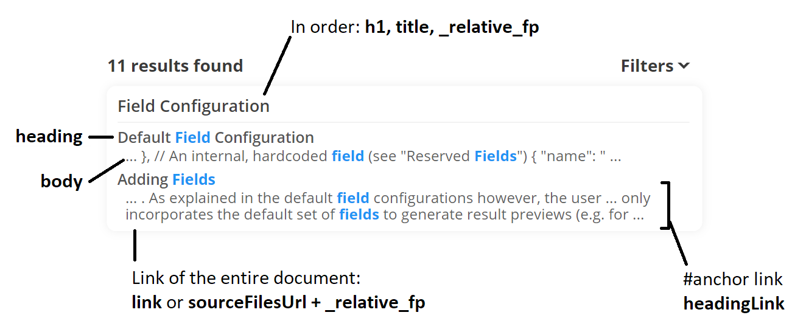

Indexer Field Configuration
Every document you index contains multiple fields. By default, InfiSearch comes baked in with the configurations needed for supporting static site search.
Default Field Configuration
It may be helpful to first understand the default fields as examples, and how they are used in the UI:
{
"fields_config": {
"fields": {
"title": { "weight": 2.0 },
"h1": { "weight": 2.0 },
"heading": { "weight": 1.5 },
"body": { "weight": 1.0 },
// The default weight is 0.0. These fields are stored, but not searchable.
"headingLink": {},
"link": {},
"_relative_fp": {} // An internal, reserved field (see "Reserved Fields")
}
}
}
| Field | Source | UI Usage |
|---|---|---|
| h1, title | <h1>, <title> | Result preview’s title. When unavailable, the _relative_fp field is displayed as a breadcrumb. |
| heading | <h2-6> | Result preview sub match’s heading. |
| headingLink | <h2-6 id=".."> | Result preview sub match’s #anchor link. |
| body | <body> | Result preview sub match’s main text. |
| _relative_fp | Relative file path from the source indexer folder | Result preview’s <a> link by concatenating sourceFilesUrl to _relative_fp |
| link | User supplied override for linking to other pages | Result preview’s <a> link. Convenience default field to support custom overrides for links easily (e.g. when indexing a JSON document). |
Click to view Graphical Illustration
Adding Fields
You can add your own fields to index for free-text search, create categorical and/or numeric facet filters, and custom numeric sort orders.
The user interface only incorporates the default set of fields in result highlighting however. If you need to incorporate additional fields, for example to display a icon beside each result, you can alter the HTML outputs, or use the search API.
Removing Default Fields
If you are using InfiSearch as a general-purpose client side search tool, you can assign a value of null to remove default field definitions completely as a minor optimization.
Alternatively, merge_default_fields: false removes all default field definitions.
{
"fields_config": {
"fields": {
"h1": null
},
"merge_default_fields": false
}
}
Reserved Fields
Reserved fields are prefixed with an underscore _, and are hardcoded into the indexer to perform special functions.
-
_relative_fp: the relative path from your source folder to the file.
-
_add_files: This field allows you to index multiple files as a single document, which can be useful for overriding or extending data. See this section under indexing for more details.
Field Scoring
{
"fields_config": {
"fields": {
"title": { "weight": 2.0 }
}
}
}
weight=0.0
This parameter is a boost / penalty multiplied to a individual field’s score.
Specifying 0.0 will also result in the field not being indexed into InfiSearch’s inverted index at all meaning that searching for any terms in this field will not show up any results. When used in combination with the storage parameter, the use case is to create a field that is only stored for custom sort orders, facet filters, or UI purposes (e.g. the _relative_fp field).
k=1.2 & b=0.75
These are scoring parameters that control the impact of term frequency and document lengths. The following article provides a good overview on how to configure these, if needed.
All default fields except titles and headings use the above default parameters.
Field Storage
{
"fields_config": {
"fields": {
"title": {
"storage": [{ "type": "text" }] // defaults
}
}
}
}
As with most free-text search tools, InfiSearch performs relies on an inverted index mapping terms to source documents.
Once the result set is obtained, each result document’s data could still be useful. For example, a document’s original title is essential for generating a human-readable result preview.
InfiSearch provides 3 storage types:
1. text
In this format, the document’s raw texts are stored in a JSON file as a series of [fieldName, fieldText] pairs following the order they were seen.
This “positioned” model enables constructing detailed result preview hierarchies you see in InfiSearch’s UI currently: Title > Heading > Text under Heading
2. enum
This storage format stores a single value for each indexed document, and is useful for categorical data. Only the first such occurence is stored if there are multiple. These values can be queried using the search API or used to create multi-select filters in the search UI.
In this documentation for example (and the mdBook plugin), there is a multi-select checkbox filter that can be used to filter each page by it’s mdBook section title. (“User Guide”, “Advanced”)
Notes:
- Documents without enum values are internally assigned a default enum value that can also be queried.
- While it is unlikely you will need more, there is a hard limit of 255 possible values for your entire document collection. Excess values are discarded, and the CLI tool will print a warning.
- You can also use InfiSearch’s flexible boolean syntaxes to filter documents. Using this option however allows a simplifying assumption to store these values more compactly and enables creating UI multi-select filters easily.
3. i64
This format stores a single 64-bit unsigned integer value for each document. Only the first such occurence is stored.
{
"fields_config": {
"fields": {
"price": {
"storage": [{
"type": "i64",
"default": 1,
"parse": "normal"
}]
},
}
}
}
3 parsing strategies are available currently:
integer: a signed 64bit integerround: a double precision floating integer rounded to the nearest integerdatetime: any date time string. This string is parsed using adatetime_fmtformat specifier as outlined in the Chrono crate’sDateTime::parse_from_strmethod. The value is stored in seconds, as a UNIX timestamp relative to 1 Jan 1970 00:00 UTC.{ "type": "i64", "default": 1, "parse": { "method": "datetime", "datetime_fmt": "%Y %b %d %H:%M %z", // ---------------------- // Optional // If your datetime_fmt has no timezone, // specify it in seconds here, relative to UTC "timezone": 0, // If your datetime_fmt has no H, M, and timezone // specify the default time of day in seconds here "time": 0, // ---------------------- } }
i64 fields can be used for facet search for:
- Creating numeric or datetime min-max filters in the UI easily and/or filtering them in the Search API
- Sorting results by these fields in the UI or API